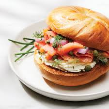

Bagel con Salmón y Queso Crema

Ingredientes
- 1 bagel
- 2 cucharadas de queso crema
- 50 g de salmón ahumado
- Rodajas de pepino y cebolla morada
- Eneldo fresco (opcional)
Preparación
Corta el bagel, unta queso crema, coloca el salmón y las verduras. Decora con eneldo si deseas.